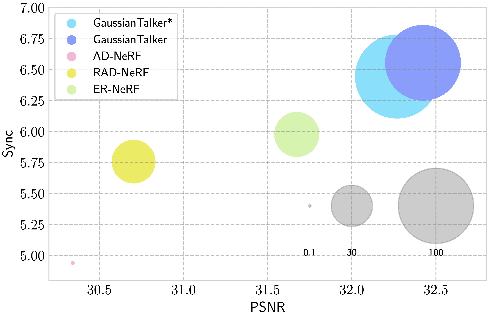

Abstract
This paper proposes GaussianTalker, a novel framework for real-time generation of pose-controllable talking heads. It leverages the fast rendering capabilities of 3D Gaussian Splatting (3DGS) while addressing the challenges of directly controlling 3DGS with speech audio. GaussianTalker constructs a single 3DGS representation of the head and deforms it in sync with the audio. A key insight is to encode the 3D Gaussian attributes into a shared implicit feature representation, where it is merged with audio features to manipulate each Gaussian attribute. This design exploits the spatial information of the head and enforces interactions between neighboring points. The feature embeddings are then fed to a spatial-audio attention module, which predicts frame-wise offsets for the attributes of each Gaussian. This method is more stable than previous concatenation or multiplication approaches for manipulating the numerous Gaussians and their intricate parameters. Overall, GaussianTalker offers a promising approach for real-time generation of high-quality pose-controllable talking heads.
Overall Framework

GaussianTalker utilizes a multi-resolution triplane to leverage different
scales of features depicting a canonical 3D head. These features are fed into a spatial-audio attention module along with the
audio feature to predict per-frame deformations, enabling fast and reliable talking head synthesis.
Comparison with Baseline Models

Fidelity and inference time comparison between existing 3D talking face synthesis models and our GaussianTalker. GaussianTalker achieves on par with or better results at much higher FPS. Note that we also include GaussianTalker*, a more efficient and faster variant. Size of each bubble represents the inference time of each method.
Guided Diffusion Results
← Hover over the image to compare results! (baseline vs ours)→
Unconditional Generation
Conditional Generation


Stable Diffusion Results
Unconditional Generation


Conditional Generation (CFG vs CFG + Ours)


Citation
If you find our work useful in your research, please cite our work as:
@misc{ko2024talk3d,
title={Talk3D: High-Fidelity Talking Portrait Synthesis via Personalized 3D Generative Prior},
author={Jaehoon Ko and Kyusun Cho and Joungbin Lee and Heeji Yoon and Sangmin Lee and Sangjun Ahn and Seungryong Kim},
year={2024},
eprint={2403.20153},
archivePrefix={arXiv},
primaryClass={cs.CV}
}
Acknowledgements
The website template was borrowed from Michaël Gharbi.